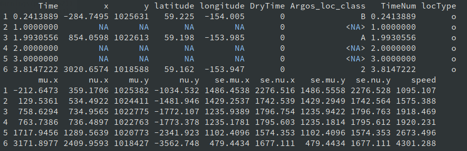

This vignette shows how to prepare tagging data in the formats expected by admove.
The package currently supports three tag types:
- Data-storage (archival) tags
- Mark-resight tags
- Mark-recapture (conventional) tags
In admove, data-storage tags are referred to as
dtags (tag type "d"), mark-resight tags as
stags (tag type "s"), and mark-recapture tags
as ctags (tag type "c").
With minor exceptions (e.g., observation uncertainty), admove treats these tag types as different “views” of the same underlying population movement process, but with different sampling intensity. Typically:
-
dtagscontain hundreds to thousands of positions at regular and fine time steps, -
stagscontain sparse and irregular observations (from a few to hundreds), -
ctagscontain exactly two positions (release and recapture).
Internally, all tags are stored in a single long data frame with one row per observation (a position at a time) and columns for time, position, tag ID, and tag type.
Target data format for all tag types
The target format for all tag types (dtags,
stags, ctags) is a long data
frame where each row corresponds to one observation for one
tag.
Required columns:
-
t: numeric; elapsed time since origin -
x: numeric; x-coordinate (longitude in degrees or projected easting in m/km) -
y: numeric; y-coordinate (latitude in degrees or projected northing in m/km) -
id: identifier linking observations belonging to the same tag
Time (t)
admove uses numeric time. The prep_tags()
function can convert common date formats
(e.g. "2020-04-12", Date, days-since-origin)
into the required format that is elapsed time since origin as in
admove convention, e.g. 3.42 weeks since “2020-01-01”, where
the time units is specified in tref()$units and the origin
in tref()$origin.
A practical recommendation is to: - keep all timestamps in a
consistent timezone (often "UTC"), - avoid duplicated
timestamps within a tag unless you intentionally allow them.
Position (x, y)
admove expects observed or pre-estimated positions (e.g., longitude/latitude or projected coordinates). If your raw data are environmental measurements (light, depth/pressure, temperature) that must be converted to locations, do that pre-processing first (e.g., with geolocation or state-space methods).
You may use geographic coordinates (degrees) or projected coordinates (m, km), as long as you are consistent across all observations and tags. For tasks that use distances (e.g., speed filtering), projected coordinates are usually easier and less error-prone.
Identifier (id)
id can be any character string or factor (e.g.,
"1", "k40a8", "tag_001"). It is
only used to group observations by tag.
You do not need to supply a type column;
prep_tags() adds it automatically. Additional columns are
allowed and will be carried along. However, to avoid duplicate names
after standardisation, any original columns named
t, x, or y may be
dropped/replaced during preparation.
A minimal example in target format
Below we simulate two short tracks in the target format.
## construct dummy track a
track_a <- data.frame(
t = 0:5,
x = c(12.0, 12.1, 12.2, 12.2, 12.3, 12.4),
y = c(55.0, 55.0, 55.1, 55.2, 55.2, 55.3),
id = rep("tag_001", 6)
)
## construct dummy track b
track_b <- data.frame(
t = 1:4,
x = c(11.5, 11.6, 11.6, 11.7),
y = c(54.8, 54.9, 55.0, 55.1),
id = rep("tag_002", 4)
)
## combine two tracks
tracks <- rbind(track_a, track_b)
head(tracks)
#> t x y id
#> 1 0 12.0 55.0 tag_001
#> 2 1 12.1 55.0 tag_001
#> 3 2 12.2 55.1 tag_001
#> 4 3 12.2 55.2 tag_001
#> 5 4 12.3 55.2 tag_001
#> 6 5 12.4 55.3 tag_001While the long format above is the target, real tagging data
come in many different layouts. The sections below show how to use
admove’s prep_tags() function to standardise
common input formats for each tag type.
This function allows to work with all three tag types, by specifying
the argument tag_type,
e.g. prep_tags(tag_type = "d"). Alternatively and
demonstrated below the wrapper functions prep_dtags(),
prep_stags(), and prep_ctags() can be
used.
Data-storage (archival) tags (dtags)
For admove, data-storage tags should contain positions (observed or estimated) rather than raw light/pressure/temperature time series. Two common layouts are:
- a single long data frame with all tags combined, or
- separate data frames (one per tag) collected in a list.
Common format A: single long data frame
Assume you have one data frame, but with different column names:
format_a <- tracks
colnames(format_a) <- c("time", "lon", "lat", "tag_id")
head(format_a)
#> time lon lat tag_id
#> 1 0 12.0 55.0 tag_001
#> 2 1 12.1 55.0 tag_001
#> 3 2 12.2 55.1 tag_001
#> 4 3 12.2 55.2 tag_001
#> 5 4 12.3 55.2 tag_001
#> 6 5 12.4 55.3 tag_001Use prep_dtags() with a named map to the required
variables:
dtags <- prep_dtags(
x = format_a,
names = c(t = "time",
x = "lon",
y = "lat",
id = "tag_id")
)
head(dtags)
#> t x y id tag_type use
#> 1 0 12.0 55.0 tag_001 d 1
#> 2 1 12.1 55.0 tag_001 d 1
#> 3 2 12.2 55.1 tag_001 d 1
#> 4 3 12.2 55.2 tag_001 d 1
#> 5 4 12.3 55.2 tag_001 d 1
#> 6 5 12.4 55.3 tag_001 d 1Common format B: separate data frames (list input)
If your tags are stored as separate data frames with consistent
column names, combine them in a list and pass that list to
prep_dtags(). In this case id is optional; if
it is missing, prep_dtags() can create tag IDs
automatically (e.g., based on list names or sequence numbers).
dtags <- prep_dtags(
x = list(track_a, track_b),
names = c(t = "t",
x = "x",
y = "y")
)
head(dtags)Common format C: output from other common movement packages
If you applied crawl (Johnson et al. 2008) to reconstruct a data-logging tag, it likely has the following structure:

You can convert that into the required format with:
dtags <- prep_dtags(
x = crawl_pred,
names = c(t = "Time",
x = "mu.x",
y = "mu.y")
)Mark-resight tags (stags)
Mark-resight data often come in the same two layouts as
dtags.
Common format A: single long data frame
stags <- prep_stags(
x = format_a,
names = c(t = "time",
x = "lon",
y = "lat",
id = "tag_id")
)
head(stags)
#> t x y id tag_type use
#> 1 0 12.0 55.0 tag_001 s 1
#> 2 1 12.1 55.0 tag_001 s 1
#> 3 2 12.2 55.1 tag_001 s 1
#> 4 3 12.2 55.2 tag_001 s 1
#> 5 4 12.3 55.2 tag_001 s 1
#> 6 5 12.4 55.3 tag_001 s 1Common format B: separate data frames (list input)
stags <- prep_stags(
x = list(track_a, track_b),
names = c(t = "t",
x = "x",
y = "y")
)
head(stags)
#> t x y id tag_type use
#> 1 0 12.0 55.0 tag_001 s 1
#> 2 1 12.1 55.0 tag_001 s 1
#> 3 2 12.2 55.1 tag_001 s 1
#> 4 3 12.2 55.2 tag_001 s 1
#> 5 4 12.3 55.2 tag_001 s 1
#> 6 5 12.4 55.3 tag_001 s 1Mark-recapture (conventional) tags (ctags)
Mark-recapture tags contain only two positions per tag (release and recapture). They may be provided as:
- a long data frame with two rows per tag,
- a list of two-row data frames (one per tag),
- a single wide data frame with one row per tag (release and recapture columns), or
- separate release and recapture tables that need to be merged.
For demonstration, we first create two-row versions of our dummy tracks by dropping intermediate observations:
Common format A: single long data frame (two rows per tag)
ctags <- prep_ctags(
x = format_a,
names = c(t = "time",
x = "lon",
y = "lat",
id = "tag_id")
)
head(ctags)
#> t x y id tag_type use
#> 1 0 12.0 55.0 tag_001 c 1
#> 2 5 12.4 55.3 tag_001 c 1
#> 3 1 11.5 54.8 tag_002 c 1
#> 4 4 11.7 55.1 tag_002 c 1Common format B: separate two-row data frames (list input)
ctags <- prep_ctags(
x = list(tag_a, tag_b),
names = c(t = "t",
x = "x",
y = "y")
)
head(ctags)
#> t x y id tag_type use
#> 1 0 12.0 55.0 tag_001 c 1
#> 2 5 12.4 55.3 tag_001 c 1
#> 3 1 11.5 54.8 tag_002 c 1
#> 4 4 11.7 55.1 tag_002 c 1Common format C: single wide data frame (one row per tag)
A very common layout is a wide table with separate columns for release and recapture. A (simulated) example data in the wide format set called “skjepo” is included in admove:
head(skjepo$ctags)
#> fish_id date_time species rel_len rel_lon rel_lat date_caught
#> 1 u6hq3n-1 43901.52 111 45.91377 -105.4224 0.3943493 44272.60
#> 2 u6hq3n-10 43901.52 111 47.41883 -105.4224 0.3943493 44017.43
#> 3 u6hq3n-100 43851.60 111 52.86190 -114.3733 -6.5771942 44064.60
#> 4 u6hq3n-101 43851.60 111 45.20155 -114.3733 -6.5771942 44533.34
#> 5 u6hq3n-102 43851.60 111 50.92635 -114.3733 -6.5771942 44407.73
#> 6 u6hq3n-103 43851.60 111 46.54024 -114.3733 -6.5771942 44113.42
#> recap_lon recap_lat
#> 1 -107.6288 -1.0960298
#> 2 -108.7149 -11.9331602
#> 3 -120.7287 0.2138117
#> 4 -121.1731 -7.8260759
#> 5 -103.4598 15.7295759
#> 6 -115.1396 -13.8510942To use this wide format with prep_ctags(), provide maps
for the six required columns: t0, x0,
y0, t1, x1, y1. If
time is stored as “days since origin”, use date_origin to
convert to calendar dates before conversion to decimal dates.
ctags <- prep_ctags(
x = skjepo$ctags,
names = c(t0 = "date_time",
x0 = "rel_lon",
y0 = "rel_lat",
t1 = "date_caught",
x1 = "recap_lon",
y1 = "recap_lat"),
date_origin = "1899-12-30"
)
head(ctags)
#> t x y id fish_id species rel_len tag_type
#> 1 7.5022514 -105.4224 0.3943493 wl4-1 u6hq3n-1 111 45.91377 c
#> 2 60.5147514 -107.6288 -1.0960298 wl4-1 u6hq3n-1 111 45.91377 c
#> 3 0.3710766 -114.3733 -6.5771942 wl4-10 u6hq3n-107 111 50.60561 c
#> 4 90.7871481 -132.6482 -5.1631626 wl4-10 u6hq3n-107 111 50.60561 c
#> 5 5.6279940 -116.2434 8.8340880 wl4-100 u6hq3n-189 111 46.50313 c
#> 6 43.4663868 -109.1361 11.4681655 wl4-100 u6hq3n-189 111 46.50313 c
#> use
#> 1 1
#> 2 1
#> 3 1
#> 4 1
#> 5 1
#> 6 1Common format D: separate release and recapture tables
Sometimes release and recapture information are stored in two separate tables. Below we create such tables from the skipjack example:
released <- skjepo$ctags[, c("fish_id", "date_time", "rel_lon", "rel_lat")]
colnames(released) <- c("id", "time", "lon", "lat")
recaptured <- skjepo$ctags[, c("fish_id", "date_caught", "recap_lon", "recap_lat")]
colnames(recaptured) <- c("id", "time", "lon", "lat")
head(released)
#> id time lon lat
#> 1 u6hq3n-1 43901.52 -105.4224 0.3943493
#> 2 u6hq3n-10 43901.52 -105.4224 0.3943493
#> 3 u6hq3n-100 43851.60 -114.3733 -6.5771942
#> 4 u6hq3n-101 43851.60 -114.3733 -6.5771942
#> 5 u6hq3n-102 43851.60 -114.3733 -6.5771942
#> 6 u6hq3n-103 43851.60 -114.3733 -6.5771942
head(recaptured)
#> id time lon lat
#> 1 u6hq3n-1 44272.60 -107.6288 -1.0960298
#> 2 u6hq3n-10 44017.43 -108.7149 -11.9331602
#> 3 u6hq3n-100 44064.60 -120.7287 0.2138117
#> 4 u6hq3n-101 44533.34 -121.1731 -7.8260759
#> 5 u6hq3n-102 44407.73 -103.4598 15.7295759
#> 6 u6hq3n-103 44113.42 -115.1396 -13.8510942To use this with prep_ctags(), first merge to a wide
format. The suffixes argument helps keep release and
recapture columns distinct:
format_d <- merge(
released, recaptured,
by = "id",
suffixes = c("_rel", "_rec")
)
head(format_d)
#> id time_rel lon_rel lat_rel time_rec lon_rec lat_rec
#> 1 u6hq3n-1 43901.52 -105.4224 0.3943493 44272.60 -107.6288 -1.0960298
#> 2 u6hq3n-10 43901.52 -105.4224 0.3943493 44017.43 -108.7149 -11.9331602
#> 3 u6hq3n-100 43851.60 -114.3733 -6.5771942 44064.60 -120.7287 0.2138117
#> 4 u6hq3n-101 43851.60 -114.3733 -6.5771942 44533.34 -121.1731 -7.8260759
#> 5 u6hq3n-102 43851.60 -114.3733 -6.5771942 44407.73 -103.4598 15.7295759
#> 6 u6hq3n-103 43851.60 -114.3733 -6.5771942 44113.42 -115.1396 -13.8510942Now standardise using prep_ctags():
ctags <- prep_ctags(
x = format_d,
names = c(t0 = "time_rel",
x0 = "lon_rel",
y0 = "lat_rel",
t1 = "time_rec",
x1 = "lon_rec",
y1 = "lat_rec"),
date_origin = "1899-12-30"
)
head(ctags)
#> t x y id tag_type use
#> 1 7.5022514 -105.4224 0.3943493 u6hq3n-1 c 1
#> 2 60.5147514 -107.6288 -1.0960298 u6hq3n-1 c 1
#> 3 7.5022514 -105.4224 0.3943493 u6hq3n-10 c 1
#> 4 24.0611799 -108.7149 -11.9331602 u6hq3n-10 c 1
#> 5 0.3710766 -114.3733 -6.5771942 u6hq3n-100 c 1
#> 6 30.7996481 -120.7287 0.2138117 u6hq3n-100 c 1Other functionality of prep_tags()
Converting date strings and decimal years to numeric time
In the examples above, time was already in the required format
elapsed time since origin. If that is not the case, the
date_decimal, date_origin and
date_format arguments allow conversion from common date
representations to the required format.
As an example, assume your data contain dates in R’s
Date format
track_a <- data.frame(
date = as.Date("2020-01-01") + 0:5,
x = c(12.0, 12.1, 12.2, 12.2, 12.3, 12.4),
y = c(55.0, 55.0, 55.1, 55.2, 55.2, 55.3),
id = rep("tag_001", 6)
)
head(track_a)
#> date x y id
#> 1 2020-01-01 12.0 55.0 tag_001
#> 2 2020-01-02 12.1 55.0 tag_001
#> 3 2020-01-03 12.2 55.1 tag_001
#> 4 2020-01-04 12.2 55.2 tag_001
#> 5 2020-01-05 12.3 55.2 tag_001
#> 6 2020-01-06 12.4 55.3 tag_001and as decimal years:
track_b <- data.frame(
date = lubridate::decimal_date(as.POSIXct("2020-01-01 00:03:30", tz = "UTC") + 3600 * (0:3)),
x = c(11.5, 11.6, 11.6, 11.7),
y = c(54.8, 54.9, 55.0, 55.1),
id = rep("tag_002", 4)
)
head(track_b)
#> date x y id
#> 1 2020 11.5 54.8 tag_002
#> 2 2020 11.6 54.9 tag_002
#> 3 2020 11.6 55.0 tag_002
#> 4 2020 11.7 55.1 tag_002In this case, we can use the date_format argument for
track a to specify how the dates should be parsed (same conventions as
as.Date() / strptime()):
track_a_prepped <- prep_dtags(
x = track_a,
names = c(t = "date",
x = "x",
y = "y",
id = "id"),
date_format = "%Y-%m-%d"
)
str(track_a_prepped, 1)
#> Classes 'admove_tags' and 'data.frame': 6 obs. of 6 variables:
#> $ t : num 0 1 2 3 4 5
#> $ x : num 12 12.1 12.2 12.2 12.3 12.4
#> $ y : num 55 55 55.1 55.2 55.2 55.3
#> $ id : chr "tag_001" "tag_001" "tag_001" "tag_001" ...
#> $ tag_type: Factor w/ 4 levels "d","s","c","a": 1 1 1 1 1 1
#> $ use : num 1 1 1 1 1 1
#> - attr(*, "sref")=List of 3
#> ..- attr(*, "class")= chr "admove_sref"
#> - attr(*, "tref")=List of 3
#> ..- attr(*, "class")= chr "admove_tref"Similarly, date_origin is useful when dates are stored
as “days since origin”. These arguments correspond directly to the
format and origin arguments of
as.Date(). For example:
as.Date(32768, origin = "1900-01-01")
#> [1] "1989-09-19"For track b, we can use the date_decimal argument:
track_b_prepped <- prep_dtags(
x = track_b,
names = c(t = "date",
x = "x",
y = "y",
id = "id"),
date_decimal = TRUE
)
str(track_b_prepped, 1)
#> Classes 'admove_tags' and 'data.frame': 4 obs. of 6 variables:
#> $ t : num 0.0583 1.0583 2.0583 3.0583
#> $ x : num 11.5 11.6 11.6 11.7
#> $ y : num 54.8 54.9 55 55.1
#> $ id : chr "tag_002" "tag_002" "tag_002" "tag_002"
#> $ tag_type: Factor w/ 4 levels "d","s","c","a": 1 1 1 1
#> $ use : num 1 1 1 1
#> - attr(*, "sref")=List of 3
#> ..- attr(*, "class")= chr "admove_sref"
#> - attr(*, "tref")=List of 3
#> ..- attr(*, "class")= chr "admove_tref"Now, we just have to combine these two tags, which we come back to further below. First we need to look at time and space reference information.
Specifying time reference information
The time reference information is important as it stores the origin
to which time 0 corresponds to and the units that defines
if 1 corresponds to one day, week, month, year, etc.
For that reason, prep_tags() includes the
tref argument that allows specifying these important
variables. For example, we can prepare the conventional tags from above
with the corresponding tref information by
ctags <- prep_ctags(
x = list(tag_a, tag_b),
names = c(t = "t",
x = "x",
y = "y"),
tref = list(origin = "2020-01-01",
units = "weeks")
)
head(ctags)
#> t x y id tag_type use
#> 1 0 12.0 55.0 tag_001 c 1
#> 2 5 12.4 55.3 tag_001 c 1
#> 3 1 11.5 54.8 tag_002 c 1
#> 4 4 11.7 55.1 tag_002 c 1Now, the numeric values in ctags$t cannot be
misinterpreted any longer as the time reference information is
clear:
tref(ctags)
#> $origin
#> [1] "2020-01-01 CET"
#>
#> $units
#> [1] "weeks"
#>
#> $period
#> [1] 52
#>
#> attr(,"class")
#> [1] "admove_tref"This information is also provided in the summary:
summary(ctags)
#> <admove_tags>
#> tags total: 2
#> ---------------------------------
#> mark-recapture tags
#> n: 2
#> average over ids:
#> n obs: 2.00
#> duration: 4.00
#> time step: 4.00
#> x step: 0.30
#> y step: 0.30
#> ---------------------------------
#> crs: not specified
#> origin: 2019-12-31 23:00:00 UTC
#> units: weeks
#> period: 52Of course, the information can also be added after the preparation of tags:
ctags <- prep_ctags(
x = list(tag_a, tag_b),
names = c(t = "t",
x = "x",
y = "y")
)
ctags <- add_tref(ctags, list(origin = "2020-01-01",
units = "weeks"))
tref(ctags)
#> $origin
#> [1] "2020-01-01 CET"
#>
#> $units
#> [1] "weeks"
#>
#> $period
#> [1] 52
#>
#> attr(,"class")
#> [1] "admove_tref"If dates or decimal years are provided rather than a numeric value,
prep_tags() will try to infer the time reference
information. For example, for the track_a_prepped and
track_b_prepped the information was inferred from the
data:
tref(track_a_prepped)
#> $origin
#> [1] "2020-01-01 UTC"
#>
#> $units
#> [1] "day"
#>
#> $period
#> [1] NA
#>
#> attr(,"class")
#> [1] "admove_tref"
tref(track_b_prepped)
#> $origin
#> [1] "2020-01-01 UTC"
#>
#> $units
#> [1] "hour"
#>
#> $period
#> [1] NA
#>
#> attr(,"class")
#> [1] "admove_tref"But as this example also illustrates, the inferred units differ
between the two tracks. This will likely lead to errors later in the
process when combining these two tags. Thus, we recommend to specify
tref for tags explicitely.
If the tref information differs between two tags or was
not inferred correctly, the shift_tref() and
scale_tref() functions allow to align the information. We
can for example align the two tracks by:
track_a_prepped <- shift_tref(track_a_prepped, origin = "2020-01-01")
track_b_prepped <- scale_tref(track_b_prepped, units = "day")Now, the tref information is equal:
tref_equal(tref(track_a_prepped), tref(track_b_prepped))
#> [1] TRUESpecifying space reference information
Similary to the time reference information, the position information
in the tags also refer to a certain coordinate system (CRS) and units.
Therefore, these tags also contain a sref object. However,
in contrast to the time reference information, there is no way to infer
the CRS and unit from the position information alone. Thus, if not
specified (default), the information is just NA:
sref(track_a_prepped)
#> $crs
#> [1] NA
#>
#> $units
#> [1] NA
#>
#> $crs_scale
#> [1] NA
#>
#> attr(,"class")
#> [1] "admove_sref"Therefore, it is recommended to specify the spatial reference system
by either using the sref argument of
prep_tags():
ctags <- prep_ctags(
x = list(tag_a, tag_b),
names = c(t = "t",
x = "x",
y = "y"),
sref = list(crs = 4326)
)
sref(ctags)
#> $crs
#> [1] "GEOGCRS[\"WGS 84\",\n ENSEMBLE[\"World Geodetic System 1984 ensemble\",\n MEMBER[\"World Geodetic System 1984 (Transit)\"],\n MEMBER[\"World Geodetic System 1984 (G730)\"],\n MEMBER[\"World Geodetic System 1984 (G873)\"],\n MEMBER[\"World Geodetic System 1984 (G1150)\"],\n MEMBER[\"World Geodetic System 1984 (G1674)\"],\n MEMBER[\"World Geodetic System 1984 (G1762)\"],\n MEMBER[\"World Geodetic System 1984 (G2139)\"],\n MEMBER[\"World Geodetic System 1984 (G2296)\"],\n ELLIPSOID[\"WGS 84\",6378137,298.257223563,\n LENGTHUNIT[\"metre\",1]],\n ENSEMBLEACCURACY[2.0]],\n PRIMEM[\"Greenwich\",0,\n ANGLEUNIT[\"degree\",0.0174532925199433]],\n CS[ellipsoidal,2],\n AXIS[\"geodetic latitude (Lat)\",north,\n ORDER[1],\n ANGLEUNIT[\"degree\",0.0174532925199433]],\n AXIS[\"geodetic longitude (Lon)\",east,\n ORDER[2],\n ANGLEUNIT[\"degree\",0.0174532925199433]],\n USAGE[\n SCOPE[\"Horizontal component of 3D system.\"],\n AREA[\"World.\"],\n BBOX[-90,-180,90,180]],\n ID[\"EPSG\",4326]]"
#>
#> $units
#> [1] "degree"
#>
#> $crs_scale
#> [1] 1
#>
#> attr(,"class")
#> [1] "admove_sref"or by adding the sref afterwards:
ctags <- prep_ctags(
x = list(tag_a, tag_b),
names = c(t = "t",
x = "x",
y = "y")
)
ctags <- add_sref(ctags, list(crs = 4326))
sref(ctags)
#> $crs
#> [1] "GEOGCRS[\"WGS 84\",\n ENSEMBLE[\"World Geodetic System 1984 ensemble\",\n MEMBER[\"World Geodetic System 1984 (Transit)\"],\n MEMBER[\"World Geodetic System 1984 (G730)\"],\n MEMBER[\"World Geodetic System 1984 (G873)\"],\n MEMBER[\"World Geodetic System 1984 (G1150)\"],\n MEMBER[\"World Geodetic System 1984 (G1674)\"],\n MEMBER[\"World Geodetic System 1984 (G1762)\"],\n MEMBER[\"World Geodetic System 1984 (G2139)\"],\n MEMBER[\"World Geodetic System 1984 (G2296)\"],\n ELLIPSOID[\"WGS 84\",6378137,298.257223563,\n LENGTHUNIT[\"metre\",1]],\n ENSEMBLEACCURACY[2.0]],\n PRIMEM[\"Greenwich\",0,\n ANGLEUNIT[\"degree\",0.0174532925199433]],\n CS[ellipsoidal,2],\n AXIS[\"geodetic latitude (Lat)\",north,\n ORDER[1],\n ANGLEUNIT[\"degree\",0.0174532925199433]],\n AXIS[\"geodetic longitude (Lon)\",east,\n ORDER[2],\n ANGLEUNIT[\"degree\",0.0174532925199433]],\n USAGE[\n SCOPE[\"Horizontal component of 3D system.\"],\n AREA[\"World.\"],\n BBOX[-90,-180,90,180]],\n ID[\"EPSG\",4326]]"
#>
#> $units
#> [1] "degree"
#>
#> $crs_scale
#> [1] 1
#>
#> attr(,"class")
#> [1] "admove_sref"Combining tags
If tags have the same tref and sref
information, they can be combined by using
dtags <- combine_tags(track_a_prepped, track_b_prepped)or just simply:
dtags <- c(track_a_prepped, track_b_prepped)If either space or time reference information does not align, these functions will throw an error.
Saving prepared data
To ensure reproducibility, save prepared objects to disk.
saveRDS() stores a single object, so it is convenient to
wrap multiple objects in a list:
prepared_tags <- list(dtags = dtags, stags = stags, ctags = ctags)
saveRDS(prepared_tags, file = "prepared_tags.rds")Alternatively, you can store them as separate .rds
files:
Summary
This vignette introduced the three tag types supported by
admove and the common long-format representation used
internally. It also demonstrated how to use preparation functions
(prep_tags() or similarly prep_dtags(),
prep_stags(), and prep_ctags()) to standardise
several common real-world input formats (long, list-of-data-frames,
wide, and merged release/recapture tables), and highlighted additional
helpers for time conversion and handling space and time reference
information.